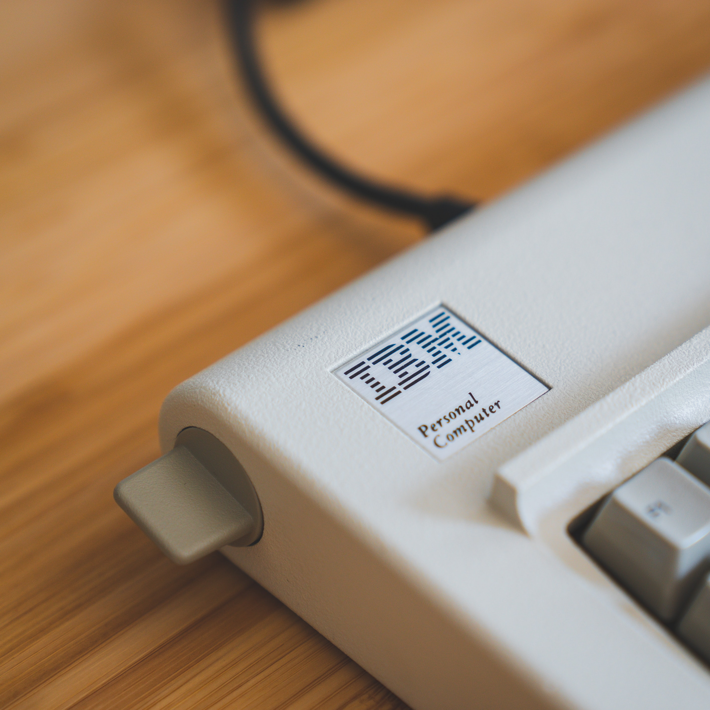

심야의 편의점을 지킨 지도 벌써 몇 달 됐다. 시급 6500원, 밤 10시 출근 아침 8시 퇴근이다.
출근하고 2-3시간쯤 후 거대한 탑차가 도착한다. 매장이 커서 물류가 엄청 들어온다. 정말 허리 나갈 것 같다. 탑차가 떠나고 매장에 쌓인 물류 박스들을 보고 있으면, 과연 이게 나 혼자 정리할 수 있는 건가 싶다. 근데 하다 보면 또 다 해낸다. 곱씹어보면 무서운 일이다.
새벽의 끼니는 폐기나 식대로 해결한다. 폐기로 도시락 정도가 나오면, 그날의 식대로는 집에 가는 길에 먹을 간단한 음식과 하루야채 음료를 산다.  그거 하나면 야채 안 먹어도 된다니까. 건강하고 싶긴 한데, 야채가 싫다.